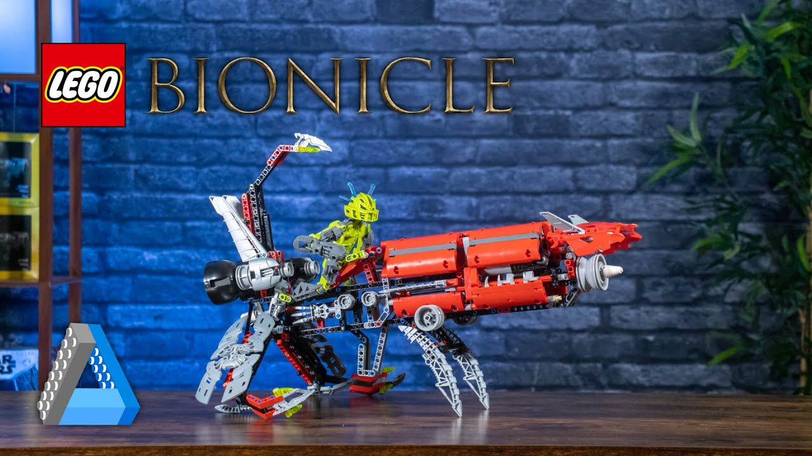

Born in 2001, Lego birthed a new theme of "action figures" that almost instantly became beloved by many fans. This theme was named Bionicles. It was not just any new theme and this theme combined a deep story tied with vibrant characters never seen before. Each year there were two major releases, one in the winter and one in the summer. The Bionicle theme concluded in 2010, where the final story came to a close. It was then rebooted in 2015, where it was largely seen as a failure for many and left a stain on Bionicle legacy.
Lego's Bionicle Theme Explaination The current market for one of the releases
Credits for image: All-Out Brick